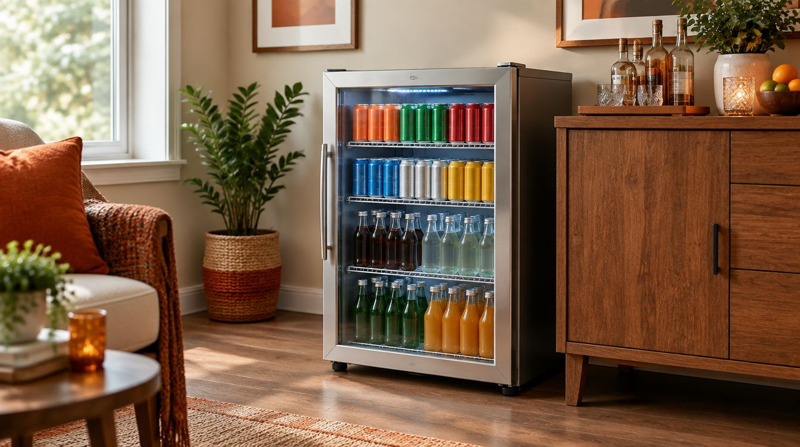
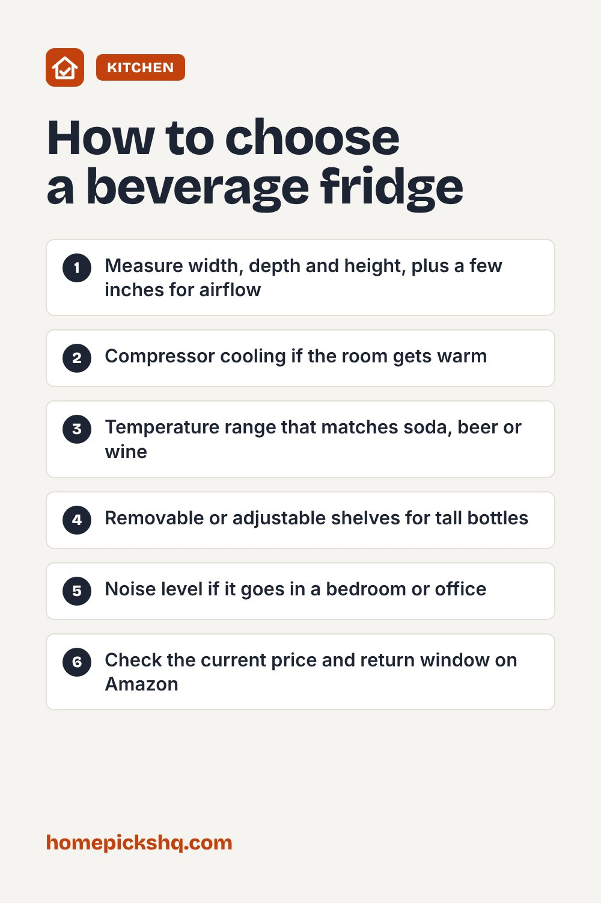

EUHOMY 130-Can Beverage Fridge: Specs, Pros, Cons and Who It's For

How we write these guides: we research manufacturer specifications, expert guidance, and owner feedback. We do not claim to have lab-tested every product. Links to Amazon on this page are affiliate links; see our disclosure.
A beverage fridge frees up your kitchen fridge and keeps drinks at the right temperature for a game day, a home bar, or a bedroom or office. The EUHOMY 130-can model is a mid-size, freestanding glass-door fridge with a compressor. Here is what its specs mean in everyday use, what to check before you buy, and who it suits best. We have not tested this unit ourselves; everything below comes from the manufacturer's listing and how these specs play out in practice.
EUHOMY 130 Can Mini Fridge, Beverage Refrigerator with Glass Door (Silver)
| Capacity | 3.2 cu. ft., up to 130 standard 12 oz cans |
|---|---|
| Size | 18.5" D x 17.8" W x 30.9" H |
| Temperature | 37°F to 61°F, digital touch control |
| Cooling | Compressor with air-circulation fan |
| Shelves | 5 removable shelves, 5 slots |
| Noise | About 36 dB (manufacturer figure) |
| Energy | About 0.69 kWh per day |
| Door | Double-layer UV-blocking glass, reversible |
Pros
- Compressor cooling holds temperature better in a warm room than cheaper thermoelectric coolers
- Wide 37°F to 61°F range covers soda and beer at the cold end and wine at the warm end
- Removable shelves let you fit tall bottles or more cans
- Reversible door and adjustable feet make placement easier
- Quiet rating suits a bedroom or office
Cons
- Freestanding only: it needs open space around it to vent, so do not build it into cabinets
- At about 31 inches tall it is a floor unit, not a countertop fridge
- A glass door shows off drinks but lets in more warmth than a solid door when the room gets hot
- You must let it stand upright for 24 hours before plugging it in
Check price on AmazonPrice and availability change often. As an Amazon Associate I earn from qualifying purchases.
Who it's for
This size makes sense if you keep a steady supply of canned drinks, host often, or want a dedicated fridge for a home bar, game room, garage-adjacent den, or office. If you only need a six-pack cold in a dorm, a smaller cube fridge costs less and takes less space. If you need to fit it under a counter, look for a front-venting built-in model instead.
What the specs mean
130 cans is a best-case number using standard 12 oz cans packed tightly. Mixed bottles and tall cans will fit fewer, so plan on 90 to 110 real-world drinks.
The 37°F lower limit is regular fridge-cold. That is right for soda, sparkling water and most beer. The 50s and low 60s suit red and white wine, so one unit can do either job, just not both at once.
A compressor works like your kitchen fridge. It cools faster and handles warm rooms far better than thermoelectric mini coolers, which often struggle once the room passes the mid-70s.
Running cost
At about 0.69 kWh a day, it uses roughly 250 kWh a year. At a typical US rate of about 17 cents per kWh, that is around $40 to $45 a year. Your cost will be higher in a hot garage or if the door is opened constantly.
Before you buy
Measure the spot: you need about 18 inches of width and 31 inches of height, plus a few inches of air gap at the back and sides. Check which way the door should open; it is reversible, but plan it before setup. Make sure an outlet is close, since appliance makers advise against extension cords.
Quick buying checklist
- Measure width, depth and height, plus a few inches for airflow
- Compressor cooling if the room gets warm
- Temperature range that matches soda, beer or wine
- Removable or adjustable shelves for tall bottles
- Noise level if it goes in a bedroom or office
- Check the current price and return window on Amazon
Check price on AmazonUse the checklist above to compare options. As an Amazon Associate I earn from qualifying purchases.

Frequently asked questions
Can this beverage fridge go under a counter?
It is a freestanding design, so the maker's guidance is open placement with room to vent. Building it into a cabinet can make it overheat and work harder. For under-counter installs, choose a front-venting built-in model.
Is 37°F cold enough for beer?
Yes. Most beer is served between about 38°F and 45°F, so 37°F is at or slightly below the usual range.
Why wait 24 hours before plugging it in?
Shipping can move compressor oil into the cooling lines. Letting the fridge stand upright allows it to settle back, which protects the compressor.
Can I keep food in it?
It can hold cold items, but a beverage fridge with a glass door and a 37°F floor is not the best place for raw meat or dairy. Keep perishables in your main fridge.